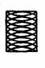
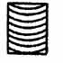
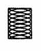

Контроль шероховатости поверхности
Содержание:
Контроль шероховатостиповерхности может проводиться:
1. Расположение неровностей и форма образцов сравнения
2. Значения параметра шероховатости Ra в зависимости от способа обработки
Контроль шероховатости поверхности может проводиться:
- Сравнением поверхности изделия с образцами шероховатости
поверхности по ГОСТ 9378-93 для конкретных способов обработки. Вместо образцов
шероховатости могут применяться аттестованные образцовые детали. - Измерением параметров шероховатости непосредственно по шкале приборов (профи-лометров), либо по увеличенному изображению профиля, или записанной профилограм-ме сечения, полученным на профилографах.
Если не задано направление измерения шероховатости, то измерения проводят в
направлении наиболее грубой шероховатости. При механической обработке – это
направление, перпендикулярное к главному движению резания (поперечная
шероховатость).
Образцы шероховатости поверхностей (сравнения) по ГОСТ 9378 – 93 (ИСО 2632 – 1, ИСО 2632 – 2) предназначены для сравнения визуально и на ощупь с поверхностями изделий, полученными обработкой резанием, полированием, алектроэрозионной, дробеструйной и пескоструйной обработкой.
Образец шероховатости поверхности (сравнения) – образец поверхности с известными параметрами шероховатости, полученной определенным способом обработки. Способы обработки, воспроизводимые образцами, форма образца и основное направление неровностей поверхности образца должны соответствовать указанным в табл 1.
1. Расположение неровностей и форма образцов сравнения
|
Способ |
Форма |
Условное |
Расположение |
|---|---|---|---|
|
Точение |
Цилиндрическая |
Т |
Прямолинейное 
Расположение неровностей-прямолинейное |
|
Расточка |
Цилиндрическая |
Р |
|
|
Фрезерование |
Плоская |
ФЦ |
|
|
Строгание |
“ |
С |
|
|
Шлифование |
Плоская ? |
ШП ШЦ ШЦВ |
|
|
Точение |
Плоская |
ТТ |
Дугообразное  Расположение неровностей-дугообразная |
|
Фрезерование |
“ |
ФТ |
|
|
Фрезерование |
Плоская |
ФТП |
Перекрещивающееся дугообразное
 Расположение неровностей |
|
Шлифование |
“ |
ШТ |
|
|
Шлифование |
“ |
ШЧ |
|
|
Электроэрозионная |
“ |
Э |
Не имеющее определенного направления штриха
|
|
Дробеструйная, |
“ |
ДС ПС |
|
|
Полирование |
Плоская, |
ПП ПЦ |
Путаный |
|
Образцы |
|||
Ряды номинальных значений параметра шероховатости Ка поверхности образца
в зависимости от воспроизводимого способа обработки и базовые длины для оценки
шероховатости должны соответствовать указанным в табл. 2.
По требованию заказчика поверхность образца может
дополнительно оцениваться параметрами шероховатости Ra, Rmax, Sm, S,
tp, значения которых не нормируются и приводятся как справочные
по результатам измерений.
Ширина образцов сравнения должна быть не менее 20 мм,
длина не менее: 20 мм при Rа от 0,025 до 12,5 мкм и базовой длине до 2,5
мм; 30 мм при Rа от 6,3 до 12,5 мкм и базовой длине 8 мм; 50 мм при Rа,
равном 25 мкм.
Радиус кривизны цилиндрических образцов в пределах 20- 40 мм.
Образцы можно изготовлять:
– применением способа обработки, который должен воспроизвести образец;
– гальванопластическим методом получения позитивных отпечатков с матриц;
– с матриц позитивных отпечатков, выполненных из пластмассы или других материалов и воспроизводящих на вид и на ощупь обработанную поверхность.
В условном обозначении образца (или набора образцов) шероховатости указывают:
номинальное значение (или интервал значений для набора) параметра шероховатости
Rа; условное обозначение способа обработки (по табл. 1); стандарт.
В условном обозначении образца (или набора образцов) шероховатости указывают: номинальное значение (или интервал значений для набора)’ параметра шероховатости Rа; условное обозначение способа обработки (по табл. 1); стандарт.
2. Значения параметра шероховатости Ra в зависимости от способа обработки
|
Способ |
Ra, |
Базовая |
|---|---|---|
|
Шлифование |
0,050 0,100 0,200 0,400 0,800 1,600 3,200 |
0,25 0,25 0,25 0,80 0,80 0,80 2,50 |
|
Точение и |
0,4 0,8 1,6 3,2 6,3 12,5 |
0,8 0,8 0,8 2,5 2,5 2,5 |
|
Фрезерование |
0,4 0,8 1,6 3,2 6,3 12,5 |
0,8 0,8 2,5 2,5 8,0 8,0 |
|
Строгание |
0,8 1,6 3,2 6,3 12,5 25,0 |
0,8 0,8 2,5 2,5 8,0 8,0 |
|
Электроэрозионная |
0,4 0,8 1,6 3,2 6,3 12,5 |
0,8 0,8 0,8 2,5 2,5 2,5 |
|
Дробеструйная, |
0,2 0,4 0,8 1,6 3,2 6,3 12,5 25,0 |
0,8 0,8 0,8 0,8 2,5 2,5 2,5 2,5 |
|
Полирование |
0,006 0,0125 0,025 0,050 0,100 0,200 |
0,08 0,08 0,08 0,25 0,25 0,80 |
|
Примечания: 1. Средний шаг неровностей поверхности образца не должен превышать 1/3 2. Малые значения Rа (до 0,1 мкм) приведены не для сравнения с |
||
Пример:
Образец шероховатости 1,6 ШЧ ГОСТ 9378 – 93
Набор образцов шероховатости 0,2 – 0,8 ШЦВ ГОСТ 9378- 93,
где 1,6 и 0,2 – 0,8 – значения параметра шероховатости Rа;
ШЧ – шлифование чашеобразным кругом;
ШЦВ – шлифование периферией круга, форма образца цилиндрическая вогнутая.
Образцы шероховатости должны иметь одинаковый цвет и блеск на всей рабочей поверхности.
Образцы должны быть размагничены.
Основное направление неровностей (см. табл. 1) должно быть параллельно более короткой стороне образца.